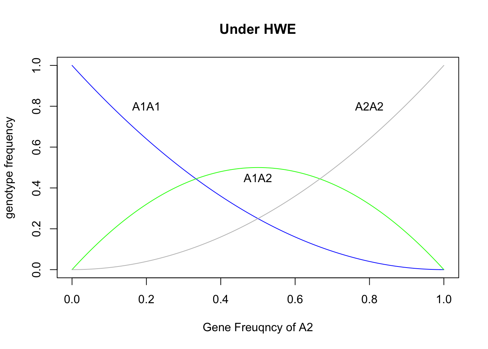
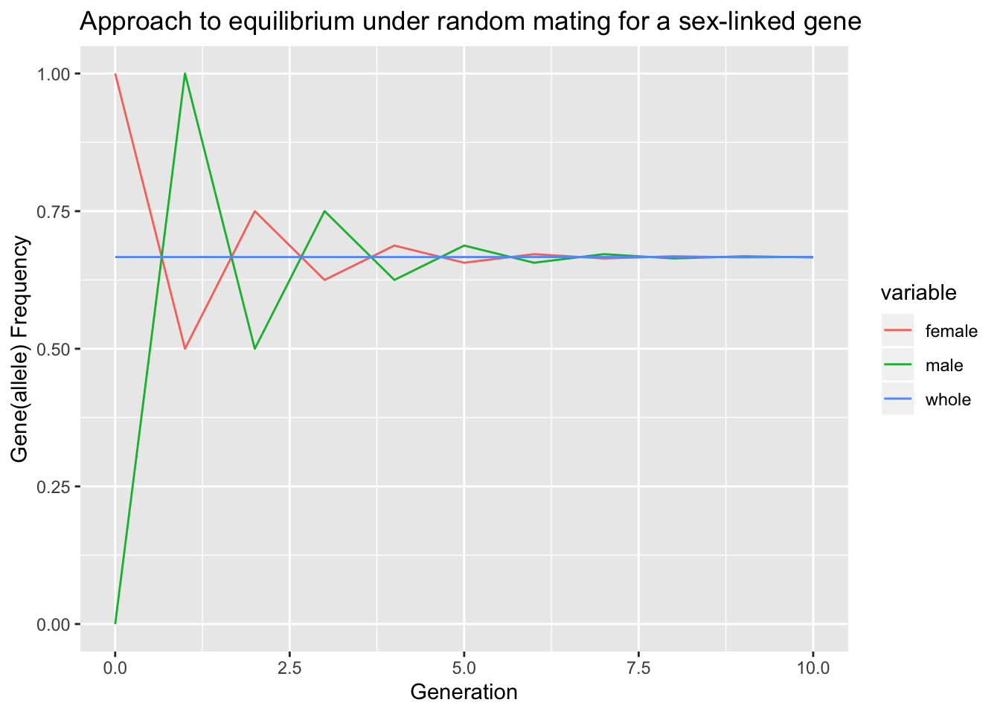
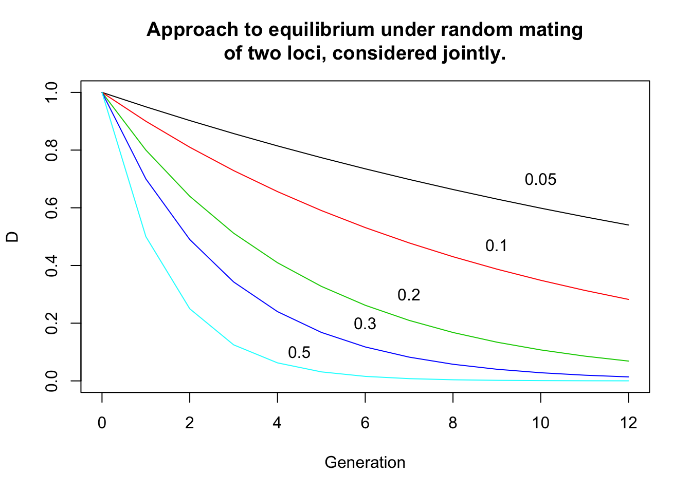

2 Genetic Constitution of A Population
2.1 Frequencies of genes(alleles) and genotypes
Genotype frequencies: the freuqncy of a particular genotype being its proportion or percentage among the individuals.
Population: in the genetic sense, a population is not just a group of individuals, but a breeding group; and the genetics of a population is concerned not only with the genetic constitution of the individuals but also with the transmission of the genes from one generation to the next.
The genetic constitution of a population, refering to the genes it carries, is described by the array of gene(alleles) frequencies; that is, by specification of the alleles present at every locus and the numbers or proportions of the different alleles at each locus.
| Frequencies | ||
|---|---|---|
| Genes(Alleles) | \(A_1\) | p |
| \(A_2\) | q | |
| Genotypes | \(A_1A_1\) | P |
| \(A_1A_2\) | H | |
| \(A_2A_2\) | Q |
- p + q =1
- P + H + Q = 1
- \(p = P + \frac{1}{2}H\) and \(q = Q+ \frac{1}{2}H\)
2.1.1 Mendelian variation in natural populations
- large effects vs small effects
- restriction fragment length polymorphisms, or RFLPs
- Microsatllite (or simple sequence repeat, SSR)
- polymorphic loci
2.1.2 Causes of change
The agencies through which the genetic properties of a population may be changed are these:
- Population size
- Differences of fertility(繁殖能力) and viability(生存能力): selection
- Migration and mutation
- Mating system
- random mating (or panmixia) means that any individual has an equal chance of mating with any other individual in the population.
2.2 Hardy-Weinberg equilibrium
2.2.1 The Hardy-Weinberg law
In a large random-mating population with no selection, mutation, or migration, the gene frequencies and the genotype frequenies are constant from generation to generation; and, furthermore, there is a simple relationship between the gene frequencies and the genotype frequencies. These properties of a population are derived from a theorem, or principle, known as the Hardy-Weinberg law after Hardy and Weinberg, who independently demonstrated them in 1908. A population with constant gene and genotype frequencies is said to be in Hardy-Weinberg equilibrium.
| Frequencies | ||
|---|---|---|
| Genes(Alleles) | \(A_1\) | p |
| \(A_2\) | q | |
| Genotypes | \(A_1A_1\) | \(p^2\) |
| \(A_1A_2\) | \(2pq\) | |
| \(A_2A_2\) | \(q^2\) |
Note: the relationship above refers to autosomal genes
Two additional conditions:
- genes segregate normally in gametogenesis
- gene frequencies are the same in males and females
Table 1.1 Steps of deduction in the proof of HWL, and the conditions that mst hold
| Step | Frequency | deduction from:to | Conditions |
|---|---|---|---|
| 0 | gene(allele) | parents | |
| 1a | gene(allele) | all gametes | (1)Normal gene segregating |
| (2)Equal fertility of parents | |||
| 1b | gene(allele) | gametes forming zygotes | (3)Equal fertilizing capacity of gametes |
| (4)Large population | |||
| 2 | genotype | zygotes | (5)Random mating |
| (6)Equal gene freuqncies in male and female parents | |||
| 3 | genotype | progeny | (7)Equal viability |
| 4 | gene(allele) | progeny |
p = seq(0,1,0.01)
plot(p, (1-p)^2, ylab = "genotype frequency", xlab="Gene Freuqncy of A2", main="Under HWE",type="l", col="blue")
lines(p, 2*p*(1-p), col="green")
lines(p, p^2, col="grey")
text(0.2,0.8,"A1A1")
text(0.5,0.45,"A1A2")
text(0.8,0.8,"A2A2")
Two important features:
- the maximum of heterozygote frequency is 50% when p = q = 0.5
- the rare allele occures predominantly in heterozygotes
2.2.2 Applications of the Hardy-Weinberg law
- allele frequency
- freuqncy of "carriers"
For example, \(A_2A_2\) is associated with a recessive phenotype, the \(A_2\) allele frequency is q. So the normal heterozygotes frquency is 2q(1-q). The percent of heterozygotes among normal individuals is
\[H' = \frac{2q(1-q)}{2q(1-q) + (1-q)^2} = \frac{2q}{1+q}\] - Test of Hardy-Weinberg equilibrium
2.2.3 Mating frequencies and another proof of the Hardy-Weinberg law
Table 1.3 Nine types of mating
| \(A_1A_1\)(P) | \(A_1A_2\)(H) | \(A_2A_2\)(Q) | |
|---|---|---|---|
| \(A_1A_1\)(P) | \(P^2\) | PH | PQ |
| \(A_1A_2\)(H) | PH | \(H^2\) | HQ |
| \(A_2A_2\)(Q) | PQ | HQ | \(Q^2\) |
Table 1.4
| mating type | mating freuqncy | frequency \(A_1A_1\) | frequency \(A_1A_2\) | frequency \(A_2A_2\) |
|---|---|---|---|---|
| \(A_1A_1 \times A_1A_1\) | \(P^2\) | \(P^2\) | - | - |
| \(A_1A_1 \times A_1A_2\) | 2PH | PH | PH | - |
| \(A_1A_1 \times A_2A_2\) | 2PQ | - | 2PQ | - |
| \(A_1A_2 \times A_1A_2\) | \(H^2\) | \(\frac{1}{4}H^2\) | \(\frac{1}{4}H^2\) | \(\frac{1}{2}H^2\) |
| \(A_1A_2 \times A_2A_2\) | 2HQ | - | HQ | HQ |
| \(A_2A_2 \times A_2A_2\) | \(Q^2\) | - | - | \(Q^2\) |
| Sums | \(p^2\) | 2pq | \(q^2\) |
2.2.4 Multiple alleles
When there are more than 2 alleles at a locus, the genotype frequencies are determined by the gene(allele) frequencies in exactly the same way as with two alleles.
2.2.5 Sex-linked genes
For homogametic sex (human females), gene and genotype frequency is the same as with the autosomal gene, but the heterogametic sex (human males) has only two genotypes and each individual carries only one gene instead of two.
So 2/3 (4 out of 6) sex-linked alleles are carried by females and 1/3 by males in the population.
Consider two alleles, A1 and A2, with frequencies p and q, and the genotypic frequencies as follow:
| Frequencies | ||
|---|---|---|
| Females | \(A_1A_1\) | P |
| \(A_1A_2\) | H | |
| \(A_2A_2\) | Q | |
| Males | \(A_1\) | R |
| \(A_2\) | S |
For females, the A1 frequncy \(p_f = P + \frac{1}{2}H\); for males, the \(p_m = R\), so the frequency of \(A_1\) in the whole population is,
\[\bar{p} = \frac{2}{3}p_f + \frac{1}{3}p_m = \frac{1}{3}(2P + H + R)\] Males get their sex-linked genes only from their mothers, and females get their sex-linked genes equally from both parents. So
\[p_m^{'} =p_f\text{ and }p_f^{'}=\frac{1}{2}(p_m + p_f)\]
where, \(p_m^{'}\) and \(p_f^{'}\) are the gene frequnce in the progeny generation.
The differnce between the frequencies in the two sexes is
\[p_f^{'}-p_m^{'} = \frac{1}{2}(p_m + p_f) -p_f = -\frac{1}{2}(p_f - p_m)\]
Therefore the distribution of the genes between the two sexes oscillates, but the difference is halved in successive generations and the population rapidly approaches an equilibrium in which the frequencies in the two sexs are equal.
GetGeneFreq_whole = function(pf, pm){
### We assume the number of males and females are equal in the population
return(2/3*pf + 1/3*pm)
}
GetGeneFreq_sex_next = function(pf,pm){
pm_next = pf
pf_next = 1/2*(pm+pf)
return(c(pf_next, pm_next))
}
data = c()
pf = 1; pm = 0; gene=0
data = rbind(data, data.frame(gene=gene, female=pf, male=pm, whole=GetGeneFreq_whole(pf,pm)))
for(gene in 1:10){
pfm = GetGeneFreq_sex_next(pf,pm)
pf = pfm[1]; pm=pfm[2]
data = rbind(data, data.frame(gene=gene, female=pf, male=pm, whole=GetGeneFreq_whole(pf,pm)))
}
library(ggplot2)
library(reshape2)
data.melt = melt(data, id.vars = "gene")
ggplot(data.melt, aes(x=gene, y=value,colour=variable), group = variable) + geom_line() +
ggtitle("Approach to equilibrium under random mating for a sex-linked gene") +
xlab("Generation") +
ylab("Gene(allele) Frequency")
2.2.6 More than one locus
Disequilibrium with respect to two or more loci is called gametic phase disequilibrium, or linkage disequilibrium, irrespective of whether the loci are linked or not.
Disequilibrium can arise from intermixture of populations with different gene frequencies, or from chance in small populations. Disequilibrium can also be produced, and maintained, by selection favouring one combination of alleles over another.
Table 1.5
| Genes(alleles) | \(A_1\) | \(A_2\) | \(B_1\) | \(B_2\) |
|---|---|---|---|---|
| Gene/allele frequencies | \(p_A\) | \(q_A\) | \(P_B\) | \(q_B\) |
| Gametic types | \(A_1B_1\) | \(A_1B_2\) | \(A_2B_1\) | \(A_2B_2\) |
| Frequencies, equilibrium | \(p_Ap_B\) | \(p_Aq_B\) | \(q_Ap_B\) | \(q_Aq_B\) |
| Frequencies, actual | r | s | t | u |
| Difference from equilibrium | +D | -D | -D | +D |
Another way of Table 1.5
| \(A_1(p_A)\) | \(A_2(q_A)\) | Total | |
|---|---|---|---|
| \(B_1(p_B)\) | \(A_1B_1(r=p_Ap_B+D)\) | \(A_2B_1(t=q_Ap_B-D)\) | \(r+t=p_B\) |
| \(B_2(q_B)\) | \(A_1B_2(s=p_Aq_B-D)\) | \(A_2B_2(u=q_Aq_B+D)\) | \(s+u=q_B\) |
| Total | \(r+s=p_A\) | \(t+u=q_A\) | 1 |
\[D = ru-st\]
Note: The statistic analysis "\(\chi^2_{[1]}=0.93; P>0.5\)" seems to me is wrong. Because 1-pchisq(0.93,1)=0.3348629, it's also not significance, but less than 0.5.
The maximum of the absolute value of D is 0.25 when \(p_A = q_A = p_B = q_B = 0.5\).
\(D_{max}\) is the largest numerical value D coud be, given the observed gene fequncies.
If two loci are linked on the same chromosome, the gamete type \(A_1B_1\) in the progeny generation can be obtainded from \(A_1B_1/A_xB_x\) without recombination or \(A_1B_x/A_xB_1\) with recombination. The frequency of the former situation is r(1-c), r being the frequency of \(A_1B_1\) in the parental gamets and c the recombination frequncy. The frequency of later situation is \(p_Ap_Bc\). Therefore the frequency of \(A_1B_1\) in the progeny gamets is
\[r' = r(1-c) + p_Ap_Bc\]
and the disequilibrium in the progeny generation is
\[D' = r' - p_Ap_B = D(1-c)\]
In a more general way, after any number t of generations, the disequilibrium is given by
\[D_t = D_0 (1-c)^t\]
plot(c(0,12),c(0,1),col="white",main="Approach to equilibrium under random mating\nof two loci, considered jointly.",xlab="Generation", ylab="D")
t = 0:12;d0 = 1
lines(t,d0*(1-0.05)^t, col=1);text(10,0.7,"0.05")
lines(t,d0*(1-0.1)^t, col=2);text(9,0.47,"0.1")
lines(t,d0*(1-0.2)^t, col=3);text(7,0.3,"0.2")
lines(t,d0*(1-0.3)^t, col=4);text(6,0.2,"0.3")
lines(t,d0*(1-0.5)^t, col=5);text(4.5,0.1,"0.5")
2.3 Non-random mating
There are two distinct forms of non-random mating.
- The first is when mated individuals are related to each other by ancestral descent. This tends to increase the frequencies of homozygotes at all loci.
- The second is when individuals tend to mate preferentially with respect to their genotypes at any particular locus under consideration.
If mated pairs are of the same phenotype more often than would occur by chance, this is called assortative mating, and if less often, it is called disassortative mating.
2.3.1 Assortative mating
The effect of assortative mating on genotype frequencies among progeny is to increase the frequencies of homzygotes and reduce that of heterozygotes.